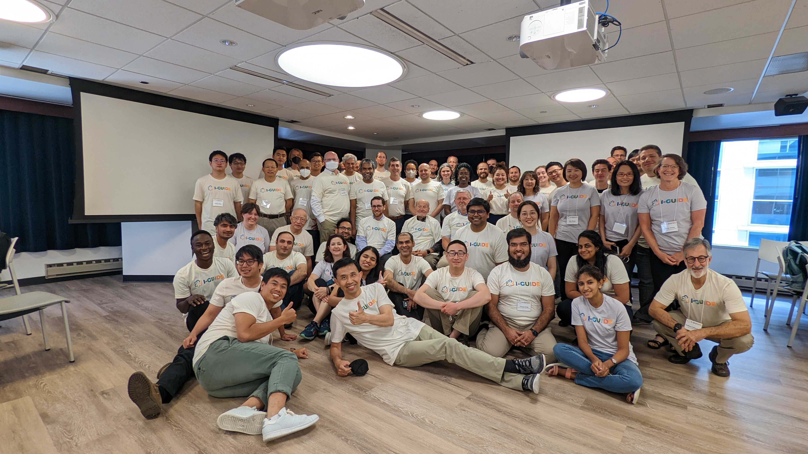
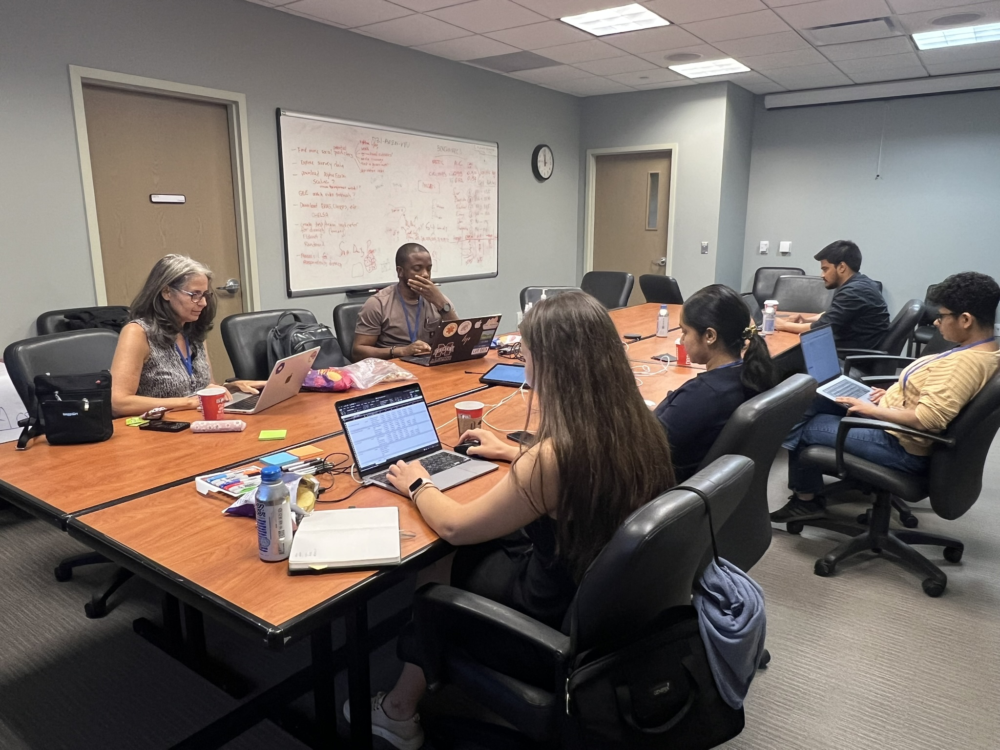
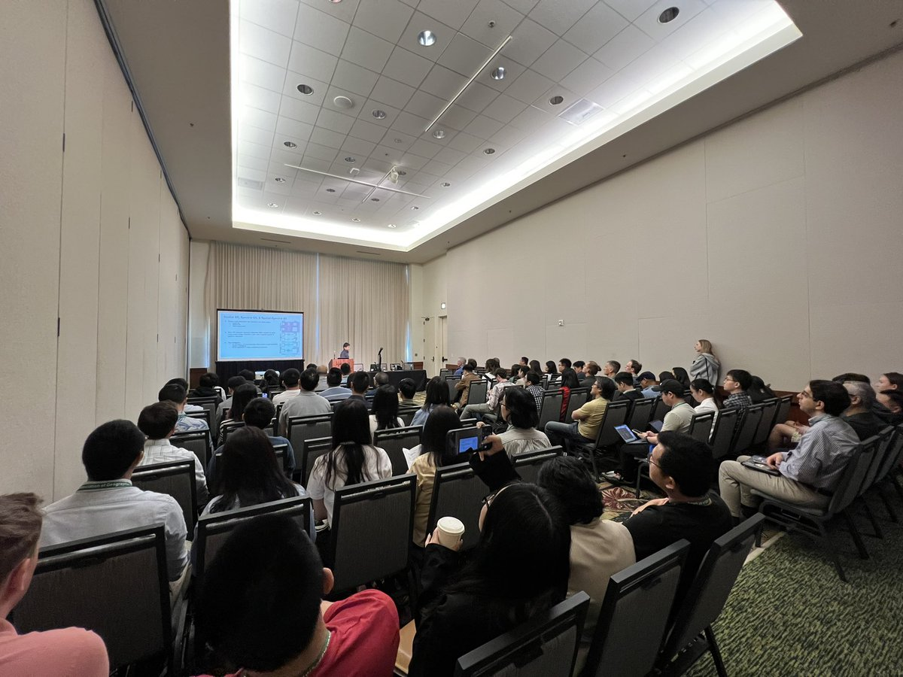
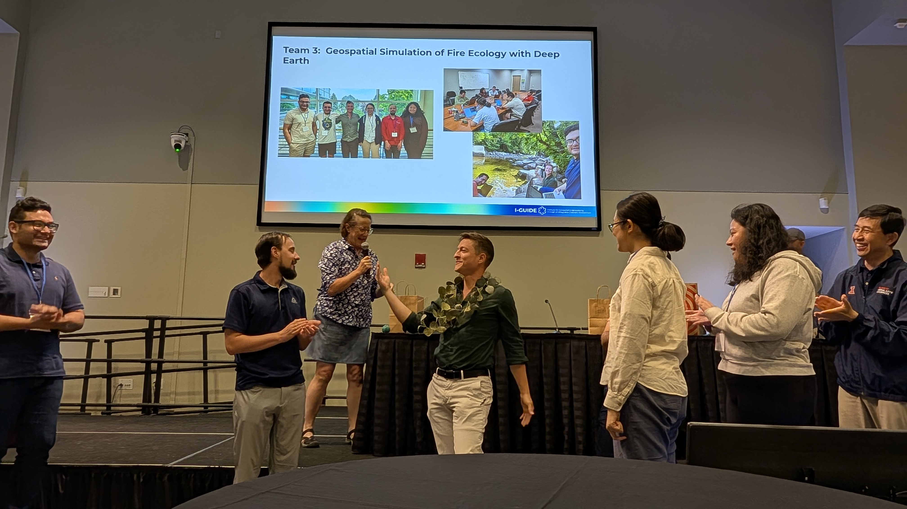
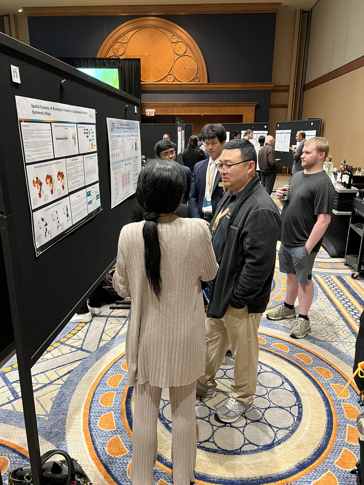
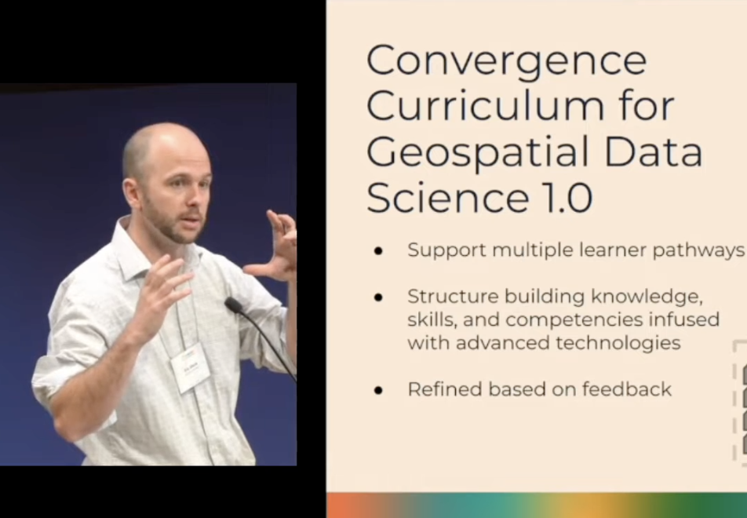

“Map, Connect, Discover”
About
I-GUIDE harnesses geospatial data and AI to illuminate complex interactions across socioeconomic and environmental systems, advancing knowledge frontiers from emergency management to community resilience. The institute fosters multidisciplinary collaboration among academic, government, and industry partners, generating insights that inform real-world geospatial decisions essential to national economic development and security. I-GUIDE supports research in critical areas such as disaster resilience, aging dam infrastructure, and food and water security. Its findings are translated into digital knowledge elements on the open-access I-GUIDE Platform (https://platform.i-guide.io), supporting a wide range of research and educational activities for broad audiences.



Mission
"Advance convergence and geospatial sciences for holistic sustainability solutions"



Vision
"Drive digital discovery and innovation by harnessing the geospatial data revolution"
Areas of work
Principal Investigators
View full team.png)
Shaowen Wang
Principal Investigator
Carol Song
Co-PI
David Tarboton
Co-PI
Deanna Hence
Co-PI
Mohan Ramaburthy
Co-PI